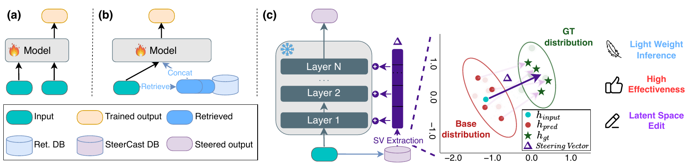
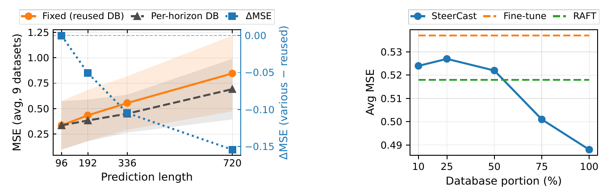
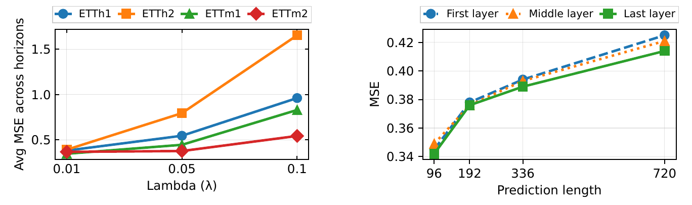

Abstract
Time series forecasting aims to predict future values from historical observations and auxiliary features. We propose SteerCast, a retrieval-based latent steering method that improves decoder-only forecaster at inference time, without updating its parameters. SteerCast constructs a database from the training set by storing a representation of each history window together with a steering vector computed in the forecaster’s latent space, defined as the difference between representations induced by the ground-truth continuation and by the model’s own prediction. At test time, SteerCast retrieves nearest neighbors for a query history, aggregates their steering vectors, and injects the resulting signal into the forecaster’s hidden states at every step of autoregressive generation, guiding predictions toward trajectories consistent with similar training cases. Experiments across diverse multivariate benchmarks and multiple horizons show that SteerCast consistently improves forecasting accuracy over the fine-tuned backbone and retrieval-based baselines, while requiring no additional training beyond the original fine-tuning and using only the training set as a retrieval corpus.
Method


Each channel of a multivariate series is forecast independently by a shared, already fine-tuned decoder-only backbone \(\mathcal{F}\) (Time-MoE, Timer-XL or TimesFM). SteerCast adds two components around it: a key–value memory \(\mathcal{M}\) built once from the training split, and a gated update applied to the hidden states during generation.
1. Database construction
Retrieval key. The final-layer hidden states \(\mathbf{Z}(\mathbf{x})\in\mathbb{R}^{N_P\times d}\) of the look-back window are averaged over time:
Steering vector. For every training pair, the same history is continued once with the model’s own forecast \(\mathbf{y}_{\text{pred}}=\mathcal{F}(\mathbf{x}_{\text{train}})\) and once with the ground truth. With \(\mathbf{h}\) the concatenation of the last-token residual-stream states of all \(L\) blocks, the stored value is
Because both continuations share the same history, \(\boldsymbol{\Delta}\) cancels history-only content and isolates the latent displacement from the model’s trajectory to the ground-truth trajectory.
2. Retrieval
At test time the query key \(\mathbf{r}_q=\mathbf{r}(\mathbf{x})\) is compared with every stored key by Euclidean distance, and the steering vectors of the \(k\) nearest entries are mean-pooled:
3. Gated injection
For the \(f\)-th forecast token and block \(l\), a non-negative cosine gate decides when to steer, weakening the update once the hidden state already points along the steering direction:
and each layer segment is \(\ell_2\)-normalised so that a single global strength \(\lambda\) controls how much to steer:
The per-step, per-layer perturbation is therefore bounded by \(\lambda\,(b + (1+m)^p)\) regardless of the data or backbone. All main experiments use \((b, m, p) = (0.1, 0.1, 1.25)\).

Results
Ten benchmarks (ETTh1/h2/m1/m2, Exchange, Weather, Illness, and the Monash series US Births, SaugeenDay and Sunspots), three decoder-only backbones, horizons {96, 192, 336, 720} ({24, 36, 48, 60} for Illness). The retrieval database is built from the chronological training split only, hyperparameters such as \(k\) are selected on the validation split, and MSE is reported on the held-out test split.
25/30
dataset–backbone entries with the lowest or tied-lowest MSE (various look-back, Table 1)
24/30
entries with the lowest or tied-lowest MSE when one 512→96 database serves all horizons (Table 2)
1.12×
inference time of the fine-tuned model, vs. 1.18× for RAF and 1.60× for RAFT (Time-MoE, Table 6)
0
gradient updates and extra input tokens: the backbone stays frozen after its original fine-tuning
Table 1. MSE of SteerCast, fine-tuning (FT), RAF and RAFT across 10 datasets, averaged over all prediction lengths, with a look-back window that grows with the horizon (512/1024/2048/3072 for horizons 96/192/336/720). Promotion: % MSE reduction of SteerCast over RAFT. Bold: lowest MSE per backbone and dataset.
| Backbone | Method | ETTh1 | ETTh2 | ETTm1 | ETTm2 | Exch. | Wthr. | Ill. | Births | Saug. | Suns. |
|---|---|---|---|---|---|---|---|---|---|---|---|
| Time-MoE | FT | 0.389 | 0.366 | 0.350 | 0.367 | 0.428 | 0.241 | 3.392 | 0.855 | 0.999 | 0.429 |
| RAF | 0.398 | 0.356 | 0.358 | 0.373 | 0.440 | 0.249 | 3.322 | 0.923 | 0.996 | 0.438 | |
| RAFT | 0.389 | 0.359 | 0.349 | 0.349 | 0.449 | 0.242 | 3.279 | 0.724 | 0.966 | 0.422 | |
| SteerCast (ours) | 0.380 | 0.351 | 0.345 | 0.339 | 0.418 | 0.242 | 3.232 | 0.639 | 0.983 | 0.420 | |
| Promotion | 2.3% | 2.2% | 1.1% | 2.8% | 6.9% | 0.0% | 1.4% | 11.7% | −1.8% | 0.5% | |
| Timer-XL | FT | 0.681 | 0.377 | 0.384 | 0.279 | 0.546 | 0.252 | 2.894 | 0.748 | 1.082 | 0.399 |
| RAF | 0.697 | 0.424 | 0.391 | 0.289 | 0.561 | 0.262 | 2.941 | 0.674 | 1.118 | 0.395 | |
| RAFT | 0.709 | 0.414 | 0.403 | 0.304 | 0.530 | 0.266 | 2.893 | 0.623 | 1.033 | 0.391 | |
| SteerCast (ours) | 0.681 | 0.372 | 0.381 | 0.280 | 0.518 | 0.255 | 2.889 | 0.625 | 1.029 | 0.391 | |
| Promotion | 3.9% | 10.1% | 5.5% | 7.9% | 2.3% | 4.1% | 0.1% | −0.3% | 0.4% | 0.0% | |
| TimesFM | FT | 0.468 | 0.421 | 0.444 | 0.310 | 0.503 | 0.270 | 3.213 | 0.667 | 1.003 | 0.181 |
| RAF | 0.462 | 0.424 | 0.437 | 0.325 | 0.499 | 0.268 | 3.156 | 0.687 | 1.037 | 0.371 | |
| RAFT | 0.452 | 0.424 | 0.440 | 0.307 | 0.498 | 0.264 | 3.167 | 0.648 | 0.985 | 0.173 | |
| SteerCast (ours) | 0.452 | 0.409 | 0.434 | 0.302 | 0.485 | 0.255 | 3.083 | 0.538 | 0.956 | 0.171 | |
| Promotion | 0.0% | 3.6% | 1.5% | 1.4% | 2.6% | 3.4% | 2.7% | 16.9% | 2.9% | 1.2% |
Table 2. Same comparison with the look-back window fixed to 512 for every horizon; a single database built at 512→96 is reused for all horizons. Promotion: % MSE reduction of SteerCast over RAFT. Bold: lowest MSE per backbone and dataset.
| Backbone | Method | ETTh1 | ETTh2 | ETTm1 | ETTm2 | Exch. | Wthr. | Ill. | Births | Saug. | Suns. |
|---|---|---|---|---|---|---|---|---|---|---|---|
| Time-MoE | FT | 0.407 | 0.537 | 0.401 | 0.509 | 0.425 | 0.237 | 3.838 | 1.012 | 1.150 | 0.566 |
| RAF | 0.400 | 0.513 | 0.394 | 0.518 | 0.431 | 0.242 | 3.848 | 0.953 | 1.139 | 0.541 | |
| RAFT | 0.402 | 0.518 | 0.391 | 0.519 | 0.435 | 0.236 | 3.868 | 0.851 | 1.106 | 0.500 | |
| SteerCast (ours) | 0.394 | 0.488 | 0.387 | 0.513 | 0.420 | 0.238 | 3.817 | 0.832 | 1.124 | 0.483 | |
| Promotion | 2.0% | 5.8% | 1.0% | 1.2% | 3.4% | −0.8% | 1.3% | 2.2% | −1.6% | 3.4% | |
| Timer-XL | FT | 0.641 | 0.394 | 0.420 | 0.294 | 0.537 | 0.248 | 2.524 | 0.704 | 1.202 | 0.426 |
| RAF | 0.653 | 0.400 | 0.425 | 0.305 | 0.457 | 0.265 | 2.606 | 0.629 | 1.112 | 0.410 | |
| RAFT | 0.661 | 0.405 | 0.422 | 0.309 | 0.461 | 0.271 | 2.584 | 0.608 | 1.095 | 0.413 | |
| SteerCast (ours) | 0.624 | 0.386 | 0.418 | 0.292 | 0.436 | 0.246 | 2.528 | 0.620 | 1.102 | 0.402 | |
| Promotion | 5.6% | 4.7% | 0.9% | 5.5% | 5.4% | 9.2% | 2.2% | −2.0% | −0.6% | 2.7% | |
| TimesFM | FT | 0.502 | 0.399 | 0.418 | 0.303 | 0.428 | 0.223 | 3.300 | 0.268 | 1.015 | 0.338 |
| RAF | 0.521 | 0.383 | 0.416 | 0.296 | 0.420 | 0.221 | 3.200 | 0.550 | 1.040 | 0.323 | |
| RAFT | 0.508 | 0.384 | 0.412 | 0.299 | 0.422 | 0.219 | 3.250 | 0.256 | 0.984 | 0.325 | |
| SteerCast (ours) | 0.476 | 0.381 | 0.394 | 0.291 | 0.408 | 0.213 | 3.163 | 0.249 | 0.952 | 0.319 | |
| Promotion | 6.3% | 0.9% | 4.4% | 2.7% | 3.3% | 2.6% | 2.7% | 2.8% | 3.3% | 1.8% |
Datasets: Exch. = Exchange, Wthr. = Weather, Ill. = Illness, Births = US Births, Saug. = SaugeenDay, Suns. = Sunspots. Full per-horizon MSE/MAE results are in the paper’s appendix.
Analysis
Steer every layer
Injecting \(\boldsymbol{\Delta}\) into all blocks gives 0.394 average MSE on ETTh1; steering only the first, middle or last block raises it by 2.0–3.0% (Table 4a).
The gate matters at long horizons
Replacing the cosine gate by a constant \(\alpha_{f,l}\equiv b\) degrades accuracy as the horizon grows; on ETTh2 at horizon 720 the MSE rises from 0.745 to 0.920 (Table 4b, Appendix A.6).
Steer gently
On all four ETT datasets a small strength \(\lambda=0.01\) is best; \(\lambda=0.05\) and \(0.1\) over-correct the backbone dynamics, increasingly so at longer horizons (Figure 4, left).
A larger memory helps
Growing the database from 10% to 100% of the training set lowers SteerCast’s average MSE on ETTh2 from 0.524 to 0.488; it outperforms fine-tuning at every size, with the largest gains at 75–100% (Figure 3, right).
Latent correction, not copied futures
Averaging the fine-tuned forecast with the retrieved future windows in output space is worse on all nine datasets tested: 0.613 vs. 0.542 average MSE for SteerCast (−11.6%, Table 11).



